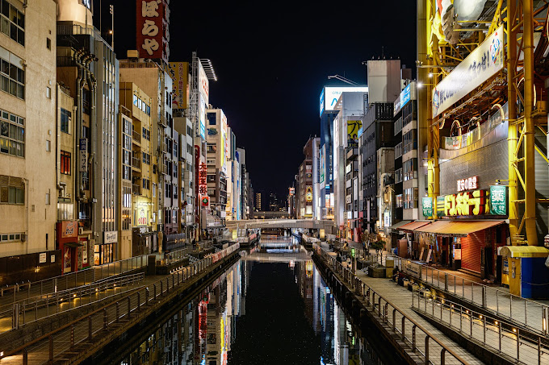
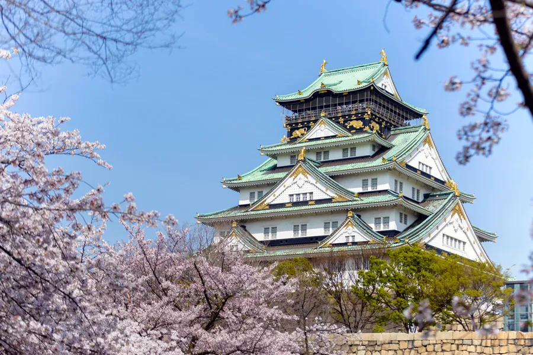
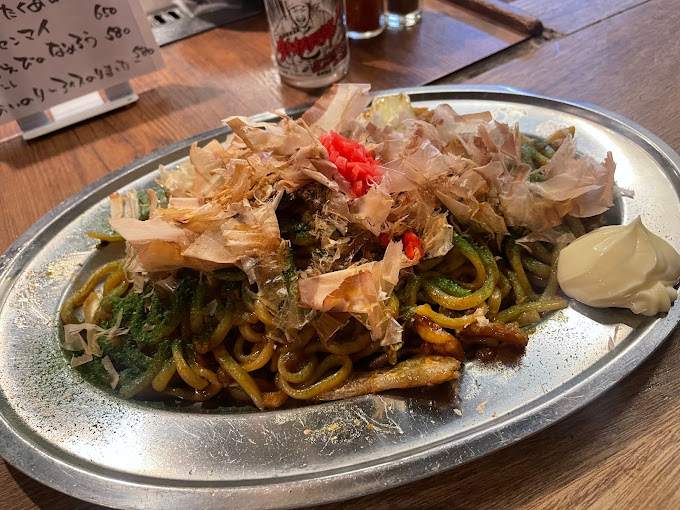

오사카는 일본의 두 번째로 큰 도시로, 현대적인 도시와 전통적인 문화가 공존하는 곳입니다. 여러 명소와 맛집이 있어 많은 여행객들이 찾는 명소 중 하나입니다.
오사카성, 도톤보리, 신오사카 차이 타운 등 오사카의 명소는 다양하게 있습니다. 역사적인 곳부터 현대적인 상업 지구까지 다양한 경험을 즐길 수 있습니다.
오사카는 일본의 대표적인 음식들을 맛볼 수 있는 곳입니다. 오사카스트리트푸드로 유명한 도톤보리에서 맛있는 음식을 즐기는 것을 놓치지 마세요.
